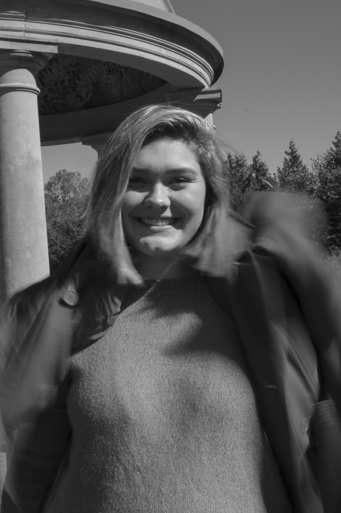
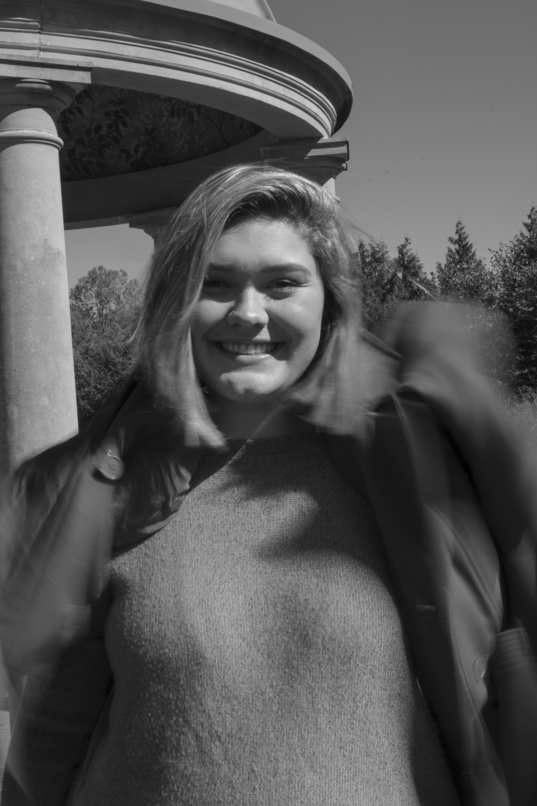

Welcome to my Photography Work! All work was created while I was studying at Ohio University-Athens for my Introduction to Photography course during the Fall of 2019. All work shown is from different completed assignments throughout the semester, with all photographs being taken around southern Ohio. Photographs were taken on a Canon Rebel EOS T6i, using only manual focus. Photographs edited in Adobe Photoshop and Adobe Lightroom.

 
